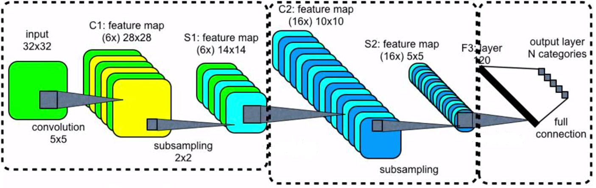

Theory of neural networks
In the previous lecture, we presented an introduction to neural networks. We also showed how to train neural networks using gradient descent. This lecture is going to show more layers and a more sophisticated way of training.
Convolutional layers
The last lecture concentrated on the dense layer. Even though it is widely used due to its simplicity, it suffers from several disadvantages, especially in visual recognition. These disadvantages include:
- Large number of parameters. For an image with $500\times 500\times 3$ pixels and the output layer of only $1000$ neurons, the dense layer would contain $750$ million parameters. This is too much to optimize.
- No structural information. Dense layers assign a weight to every pixel and then add the weighted values. This means that information from the top-leftmost and bottom-rightmost pixels of the image will be combined. Since a combination of these two pixels should carry no meaningful information, redundant computation is performed.
Convolutional layers were designed to alleviate these issues.
Motivation
To understand the convolutional layers, we need to go back to the definition of convolution. Having a function $f$ and a kernel $g$, their convolution is defined by
\[(f\ast g)(x) = \int_{-\infty}^{\infty} f(x - t)g(t) dt.\]
Let us consider the simplest case when
\[g(t) = \begin{cases} \frac{1}{2\varepsilon} &\text{if }t\in[-\varepsilon,\varepsilon], \\ 0 &\text{otherwise.} \end{cases}\]
Then
\[(f\ast g)(x) = \int_{-\infty}^{\infty} f(x - t)g(t) dt = \frac{1}{2\varepsilon}\int_{-\varepsilon}^{\varepsilon}f(x - t)dt.\]
Then $(f\ast g)(x)$ does not take the value of $f$ at $x$ but integrates $f$ over a small neighbourhood of $x$. Applying this kernel results in a smoothening of $f$.
In image processing, the image $f$ is not represented by a function but by a collection of pixels. The kernel $g$ is represented by a small matrix. For the commonly used $3\times 3$ kernel matrix, the convolution has the form
\[(f\ast g)(x,y) = \sum_{i=-1}^1\sum_{j=1}^1 f(x+i,y+j)g(i,j).\]
The following kernels
\[K_1 = \begin{pmatrix} 0 & 0 & 0 \\ 0 & 1 & 0 \\ 0 & 0 & 0 \end{pmatrix}, \qquad K_2 = \frac 19\begin{pmatrix} 1 & 1 & 1 \\ 1 & 1 & 1 \\ 1 & 1 & 1 \end{pmatrix}, \qquad K_3 = \begin{pmatrix} -1 & -1 & -1 \\ -1 & 8 & -1 \\ -1 & -1 & -1 \end{pmatrix}\]
perform identity, image smoothening and edge detection, respectively.
Formulas
Traditional techniques for image processing use multiple fixed kernels and combine their results. The idea of convolutional layers is to remove all human-made assumptions about which kernels to choose and learn the kernels' parameters based purely on data. Even though it gives superb results, it also removes any insight or interpretation humans may make.

The input of a convolutional layer has dimension $I_1\times J_1\times C_1$, where $I_1\times J_1$ is the size of the image and $C_1$ is the number of channels (1 for grayscale, 3 for coloured, anything for hidden layers). Its input is also the kernel $K$. The output of the convolutional layer has dimension $I_2\times J_2\times C_2$ and its value at some $(i_0,j_0,c_0)$ equals to
\[\text{output}(i_0,j_0,c_0) = l\left(\sum_{c=1}^C\sum_{i=-a}^{a}\sum_{j=-b}^b \Big( K_{c_0}(i,j,c) \text{input}(i_0+i,j_0+j,c) + b(c)\Big)\right).\]
After the linear operation inside, an activation function $l$ is applied. Without it, the whole network would a product of linear function and, therefore, linear function (written in a complicated form).
The natural question is the interpretation of the linear operator and the number of parameters:
- The kernel matrix $K$ contains $(2a+1)(2b+1)C_1C_2$ parameters. What does it mean? First, there is a separate kernel for each output channels. Second, the kernel also averages (more precisely, computes a linear combination) over all input channels. However, the coefficients of this linear combination do not depend on the position $(i_0,j_0)$.
- The bias $b$ has dimension $C_2$. Again, it does not depend on the position $(i_0,j_0)$.
The important thing to realize is that the number of parameters does not depend on the size of the image or the hidden layers. For example, even for an input image $500\times 500\times 3$, the convolutional layer contains only 448 parameters for $3\times 3$ kernel and $16$ output channels (do the computations).
This results in fixing the two issues mentioned above.
- The number of parameters of convolutional layers stays relatively small.
- Using kernels means that only local information from neighbouring pixels is propagated to subsequent layers.
Network structure
When an input is an image, the usual structure of the neural network is the following:
- Convolutional layer followed by a pooling layer.
- This is repeated many times.
- Flatten layer (it reshapes the three-dimensional tensor into a vector).
- Dense (fully connected) layer.
- Softmax layer.
- Cross-entropy loss function.
Practical convolutional layers involve additional complexities such as layers with even size (we showed only even sizes), padding (should zeros be added or should the output image be smaller) or stride (should there be any distance between convolutions). This goes, however, beyond the lecture.
Recurrent layer
Recurrent layers are designed to handle one-dimensional data. They are similar to convolutional layers with $J_1=J_2=C_1=C_2=1$. Unlike convolutional layers, they store additional hidden variables. The most-known representative is the long short-term memory (LSTM) cell.
Pooling layer
The goal of pooling layers is to reduce the size of the network. They take a small (such as $2\times 2$) window and perform a simple operation on this window (such as maximum or mean). Since the pooled windows do not overlap, this reduces the size of each dimension in half. Pooling layers do not have any trainable parameters.
Skip connections
From the previous lecture, we know that the gradient is computed via the chain rule
\[\nabla f = \nabla f_M\nabla f_{M-1}\dots\nabla f_1.\]
Since the formula contains multiplication, if any of the gradients is too small, then the whole gradient will be too small. Specifically, the deeper the network, the higher the chance that the initial point will be in a point with a small gradient and the training will progress slowly. This phenomenon is called vanishing gradients.
To solve the issue with vanishing gradients, skip connections are sometimes added. Even though it is not a layer, we include it here. They do precisely what their name suggests: They skip one or more layers. This makes the network more flexible: Due to its deep structure, it can approximate complicated functions, and due to its shallow structure (because of skip connections), the initial training can be fast.
Stochastic gradient descent
We recall that machine learning problems minimize the loss function
\[L(w) = \frac1n\sum_{i=1}^n \operatorname{loss}(y_i, f(w; x_i)).\]
Its gradient equals to
\[\nabla L(w) = \frac1n\sum_{i=1}^n \operatorname{loss}'(y_i, f(w; x_i))\nabla_w f(w; x_i).\]
If the dataset contains many samples ($n$ is large), then it takes long time to compute the gradient. Therefore, the full gradient is replaced by its stochastic (random) approximation
\[\frac1{|I|}\sum_{i\in I} \operatorname{loss}'(y_i, f(w; x_i))\nabla_w f(w; x_i).\]
Here, the minibatch$I$ is a small ($32, 64, \dots$) subset of all samples $\{1,\dots,n\}$. Sometimes the gradient descent is replaced by other options such as ADAM or RMSprop, which in some way consider the history of gradients.
This technique is called stochastic gradient descent. During one epoch (the time when the optimizer evaluates each sample once), it performs many gradient updates (unlike the standard gradient descent, which performs only one update). Even though these updates are imprecise, numerical experiments show that stochastic gradient descent is much faster than standard gradient descent. The probable reason is that the entire dataset contains lots of duplicate information, and the full gradient performs unnecessary computation, which slows it down.